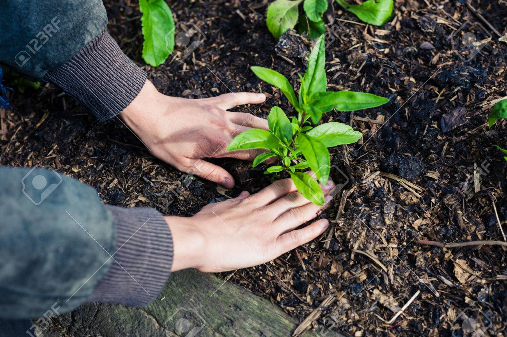

My Journey
For years I have been interested in growing my own vegetables, but with the amount of information available online and from other resources, it seemed like such a daunting task to just get started. Finally this spring after going through some difficult personal challenges, I decided that it was a good time to begin the project and that it would be a good way to focus my energy and attention on something new that would hopefully be rewarding and improve my mental health. I didn't have all the answers, but I decided to just get my hands dirty and start learning as I went, instead of spending too much time researching and planning beforehand. I know that I learn best through doing anyway, so I figured I would start small and see what plants I could grow, as well as see how I could grow personally from the experience.
I had heard that the practice of gardening had positive mental health benefits, so I wanted to see for myself whether I would notice a difference. GDA
Starting Small
I started by weeding out a small plot off of my back patio and then went to Lowes to buy starter plants. Since it was already the end of May, I found that I had a better chance of harvesting something sooner by starting with starter plants rather than seeds. Also as a beginner, this method seemed more straight forward to me, than taking the time necessary to read up on how to start seeds indoors and then transferring them outside at the right time.
I started with:
- Cucumbers
- Tomatoes
- Watermelon
- Zucchini squash
If you need some reccomendations for the easiest plants for beginners this site is a great resource. GDA
